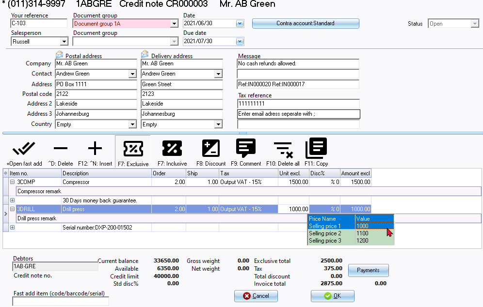
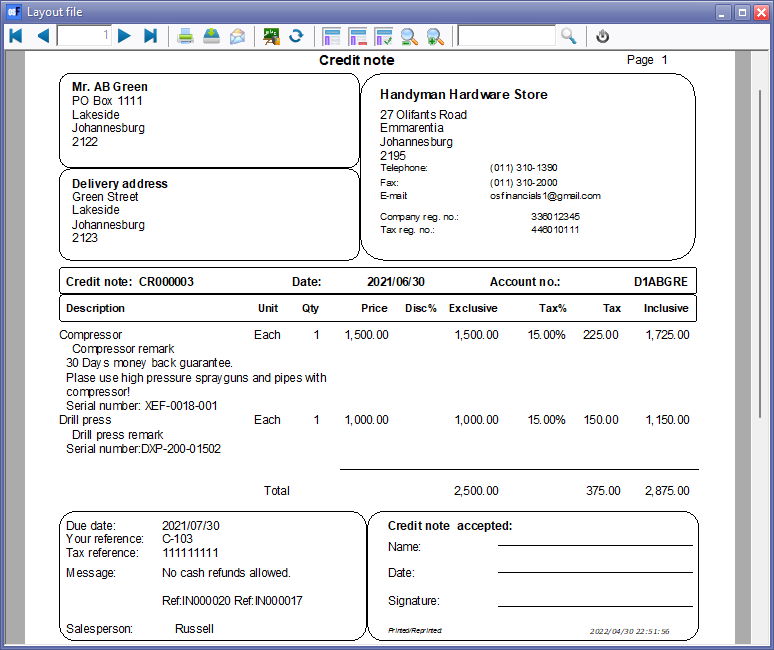

Credit notes
Credit notes are created for debtors (customers / clients) to correct a transaction or an exiting Invoice or to cancel the Invoice. This will generate a source document which can be printed. The Credit notes, can be edited before it is posted (updated) to the ledger.
When a Credit note is posted (updated) to the ledger, the transactions in the Sales journal (or the batch selected in the Setup → Documents setup - Credit notes tab on the Setup ribbon) will automatically be generated.
|
|
Posted (updated) Credit notes cannot be edited. |

|
|
You may right-click and use the Move up, Move down and Sort on stock code options on the context menu to change the sequence of the document lines. This will change the sequence of transactions and/or comments on document layout files when printing or reprinting documents. |
|
|
You may use the Reverse posted batch / document option on Tools → Global processes menu (Setup ribbon). The reversed document may then be selected and edited. It can then be posted (updated) to the ledger. |
|
|
Options to create / edit Credit notes:
|

Unposted Credit note entry form
The sections and fields of the Credit note screen, is as follows:

- Document header:
- Your reference - You may enter a reference. This will allow you to track down the reference in the Search (Investigator) on the Default ribbon. All documents matching the reference will be listed.
- Salesperson - Select a Salesperson. This field is to show who handled the Credit note. The salespersons are used for reports and to filter and search documents.
- Document group 1/2 - Select Document group 1 / 2 - These groups are used for reports and to filter and search documents.
- Date - By default, the system date will be displayed. You may enter or select any other date.
- Due date - This date will be automatically be calculated. It is the “Date” plus the number of days set in the Accounting information tab of the selected creditor account.
- Postal address - The postal address as entered for the creditor (supplier / vendor).
- Delivery address - The delivery address as entered for the debtor (customer / client) on the Delivery address tab.
- Message - You may enter messages to be printed on the document layout file.
- The message, as entered in Setup → Documents setup - Credit notes tab (Setup ribbon) will be displayed. You may edit / enter messages to be printed on the document layout file.
|
|
Message line 3 - Reference document number(s) of the copied document(s). |
- Tax reference - The Tax (VAT/GST/Sales tax) registration number as entered for the debtor (customer / client).
- Contra account:Standard - This is the default setting. If you click on this button, you may select a different account. The account code will then be displayed.
- Status - Open or Posted.
- Document lines:
- Item no. - Select a stock item.
|
|
Options to select stock items:
|
|
|
The following stock item types may be selected to process Sales documents (Quotes, Invoices and Credit notes): |
|
|
If the Financial entry stock item type is selected, the Accounts lookup screen will be displayed. The description of the selected account will be displayed. You may overtype this. |
|
|
If Abbreviation definitions were set in the Batch entry menu (F9:Process), you may enter a character (or more) to auto-complete a description in the document line. |
- Remark - You may also click on the + (before stock item code) to add a remark (additional information) for a stock item. This remark will be printed before the comment (if added) on document layout files.
|
|
Remarks are similar than comments. You may click on the + icon (before the stock code) to add a remark for the stock item. You may select Expand to show remarks or Collapse to hide remarks on the context menu. |
- Comment - You may click on the F9:Comment icon or press the F9 key to add additional information. This comment will be printed on document layout files.
|
|
|
- Order / Ship - The default quantity is 1. You may overtype the quantities.
- Unit price - If up to three (3) selling prices have been entered in in the Selling price field for the selected stock item, the selling prices will be listed. The default selling price will be selected for the Set of Books or the selling price set as default for the selected debtor (customer / client) account. You may select any of the three (3) selling prices for the item. Selling prices Exclusive of VAT/GST/Sales Tax, if the F7:Exclusive icon is active - or Inclusive of VAT/GST/Sales, Tax if the F7:Inclusive icon is active.
|
|
Selling prices If you have entered up to three (3) sales prices for a stock item (inventory / product), the selling prices will be listed when you focus in the “Unit” (amount) column. You can set the global default selling prices 1 / 2 / 3 in the Setup → Stock information (Setup ribbon) which will apply to all debtors (customers / clients). You can also set the default selling price 1 / 2 / 3 in the Debtors - Accounting information tab (Default ribbon) which will apply to a specific debtor (customer / client). |
- Discount - You may enter the discount percentage for the item.
- Amount exclusive - This will is the quantities in the Order and Ship field x Unit price. If any discount percentage is entered, the discount will be deducted from the unit price.
|
|
You may use the F11: Copy feature to copy the document transactions / comments from an existing document. |
- Document footer:
- Fast add item (code / barcode / serial) - Enter the stock code, barcode or serial number. Press enter to add the item to the document lines.
- Current balance - The balance of all posted and unposted documents for the debtor (customer / client).
- Available - The available balance is calculated as the Credit limit minus the Current balance. When processing documents, and the credit limit is exceeded, a warning message will be displayed.
- Credit limit - The credit limit as entered for the debtor (customer / client) on the Accounting information tab.
- Std disc% - Standard discount percentage is only applicable to debtor (customer / client) accounts. The discount percentage as entered for the debtor (customer / client) in the Customer discount field on the Accounting information tab.
- Click on the OK button.
|
|
By default, a confirmation message will be displayed. “Do you wish to print this quote?” You may turn this feature off by selecting the "No print confirmation" option on Stock information (Setup ribbon). |
- Click on the Yes button to print the Credit note.
Printed : Credit note
An example of the printed "Credit note", is as follows:

|
|
This example is based on the "Layout file". You may select other available layout files. |